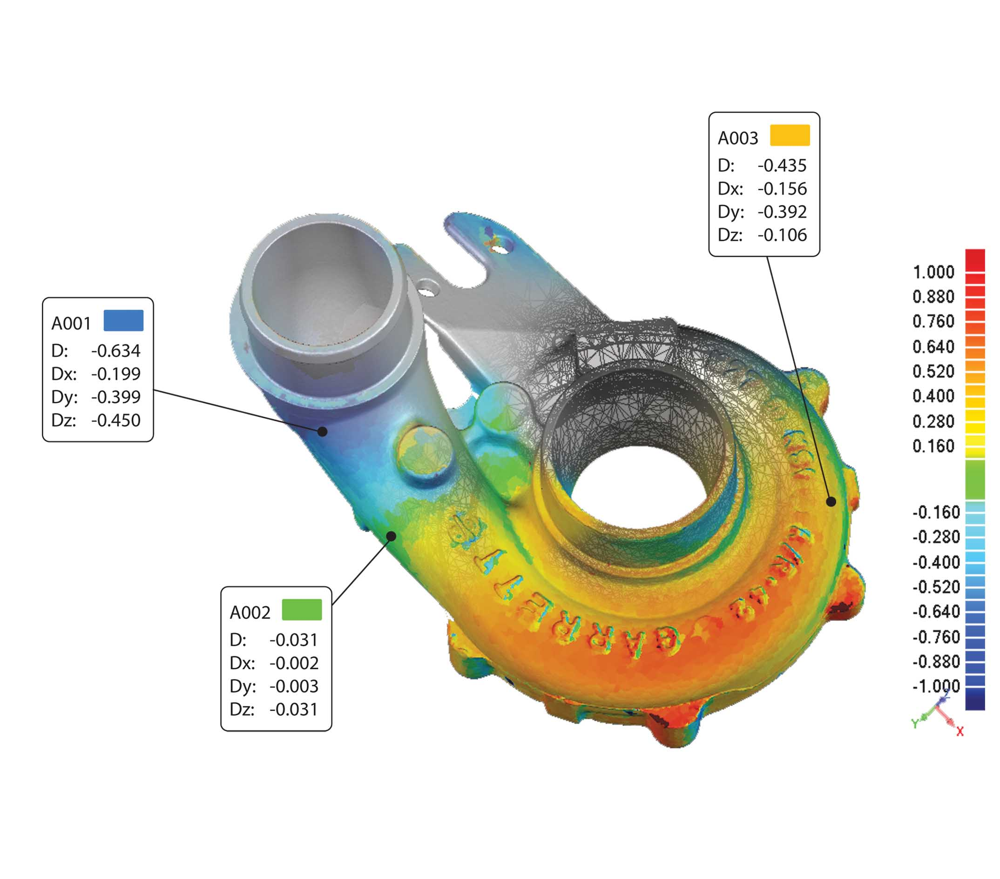

CAV電腦輔助驗證，主要使用掃描量測設備將實體成品掃描量測，並由量測系統輸出電腦可以讀取的檔案格式(Scan Data)，再將Scan Data與原始3D圖檔(CAD Data)依照需求做精確的對位與重疊，經重疊後的資料查看工件各部分尺寸的誤差，此法是一種全尺寸比對檢驗的方式。
目前全世界絕大多數汽車廠，因為產品競爭激烈,因此都非常注意在其產品的後期檢測上，已有許多車廠大量運用此法快速檢驗。目前只有此法能夠在短時間內，準確快速的完成對其產品的檢測。
將檢測工件3D形狀掃描後所得到的精準點雲資料與原始設計的CAD圖檔相比對，所得到的誤差色彩圖，可以快速有效的幫助我們判別工件與CAD的誤差與其他分析。